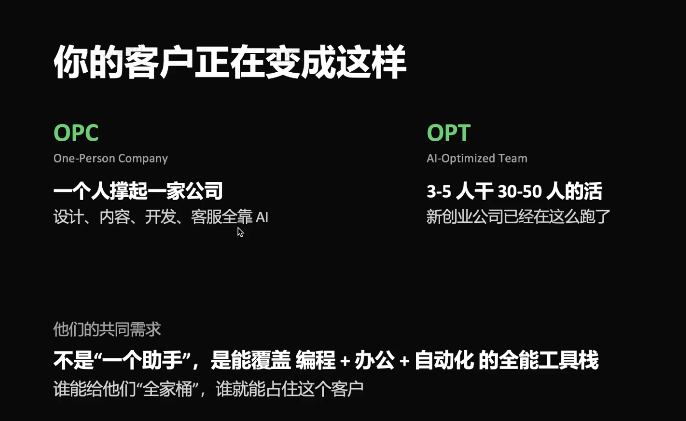
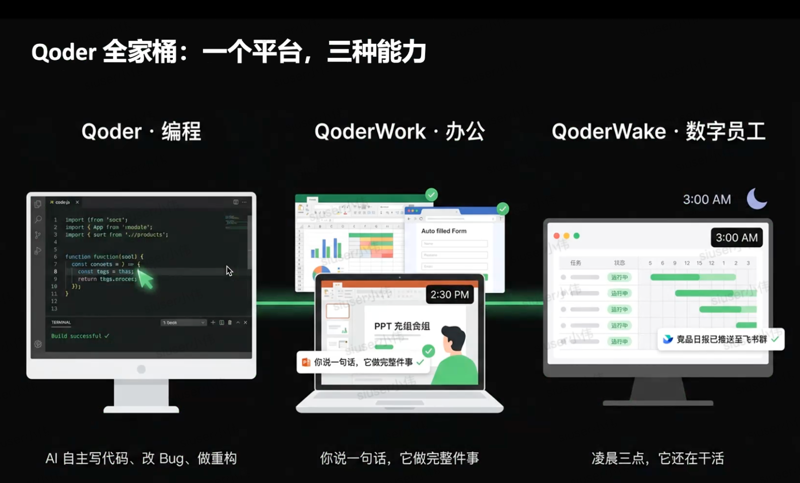
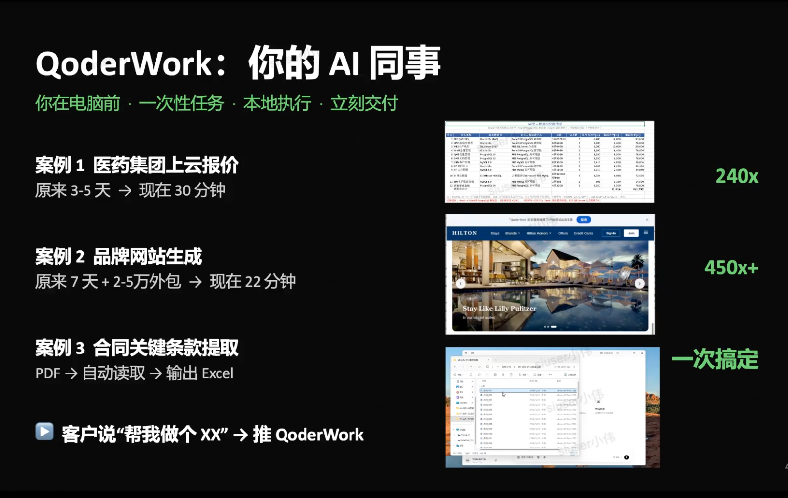
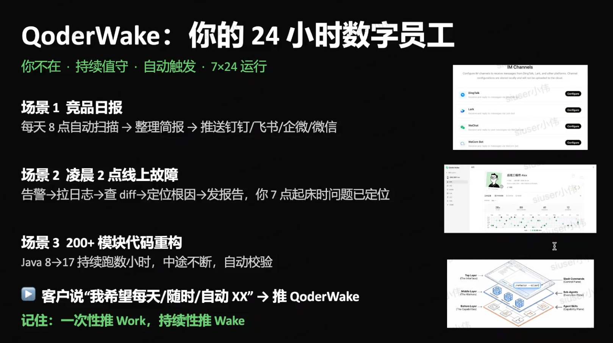
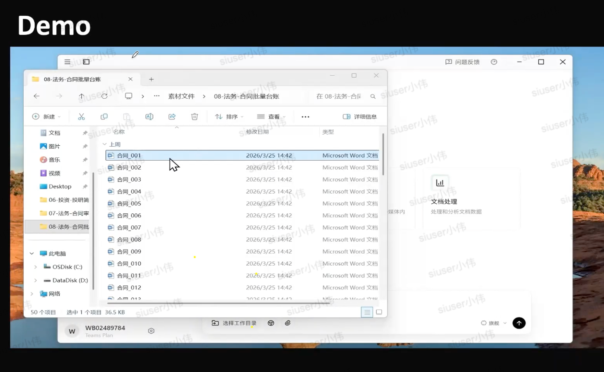
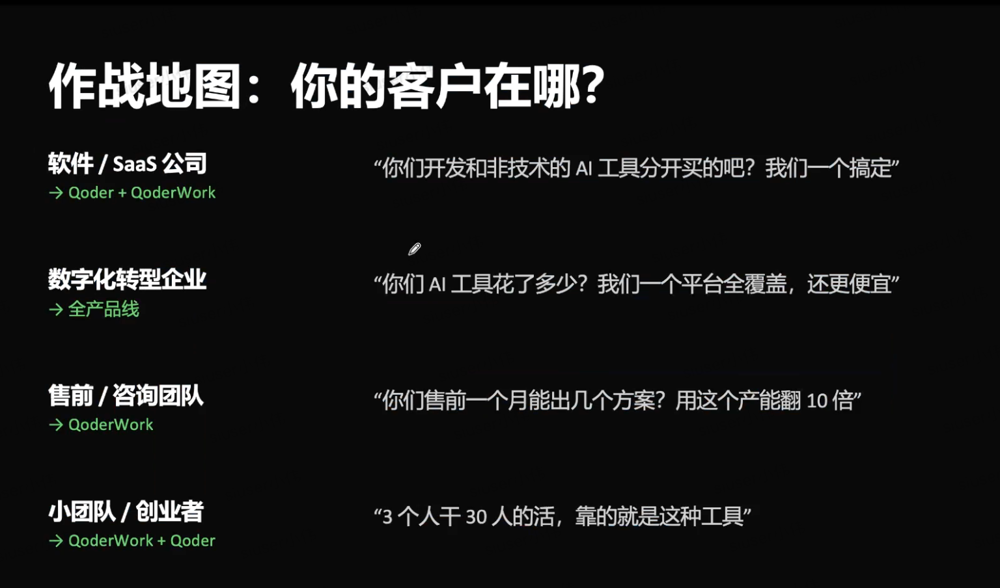
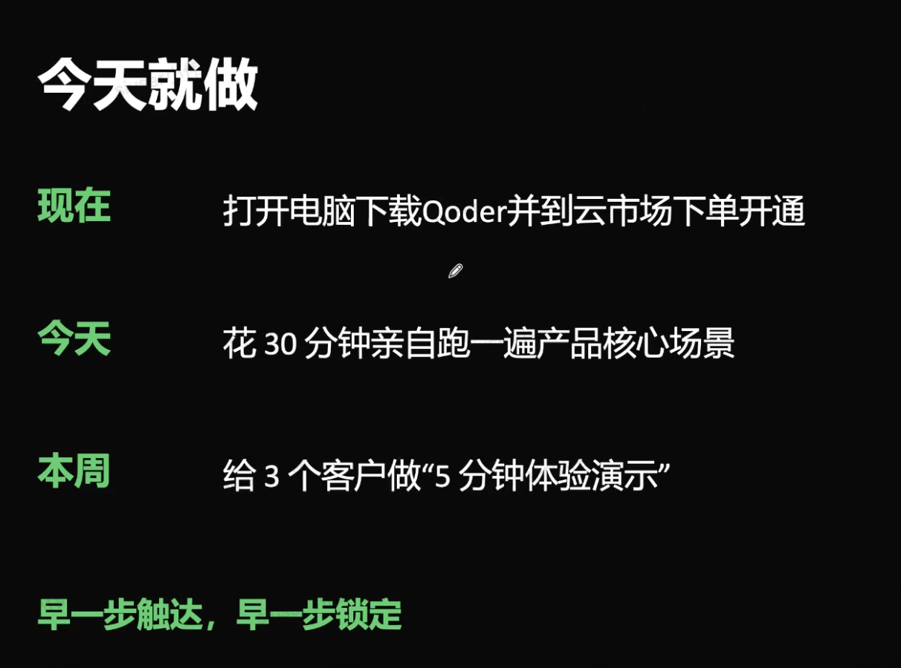

客户正在从 OPC 走向 OPT
一人公司要用 AI 撑起设计、内容、开发和客服；三五人团队希望干出三五十人的产出。客户买的不是“助手”，而是能覆盖工作流的工具栈。
Brief
如果只转给别人一屏，先转这三条：客户结构在变、工具需求在收敛、销售动作要从演示场景开始。
一人公司要用 AI 撑起设计、内容、开发和客服；三五人团队希望干出三五十人的产出。客户买的不是“助手”，而是能覆盖工作流的工具栈。
客户真实痛点不是少一个聊天框，而是编程、办公、自动化割裂。Qoder 的卖点是一个账号体系覆盖开发、文件、浏览器、表格和持续值守。
合伙人不用先讲宏大愿景，而是拿客户已有任务做短演示：报价、网站、合同、日报、故障、重构。客户看见结果，下一步才自然。
Stack
纪要里有不同转写版本，公开页统一按截图口径：Qoder 负责编程，QoderWork 负责一次性办公任务，QoderWake 负责持续值守。
Qoder · AI 编程平台
适合开发者、泛开发者和有研发需求的软件 / SaaS 公司。核心卖点是 agentic coding、工程知识理解和全球 SOTA 模型调用。
推荐口径：客户有开发需求，就先推 Qoder。
QoderWork · AI 办公搭子
适合报价、网页生成、合同抽取、方案整理、Excel 台账等一次性任务。它在本地执行，能操作文件、浏览器和表格。
推荐口径：客户说“帮我做个 XX”，推 Work。
QoderWake · 24 小时数字员工
适合每日竞品扫描、凌晨故障定位、长期代码迁移等持续性任务。重点是自动触发、7x24 运行和专岗值守。
推荐口径：客户说“每天 / 随时 / 自动 XX”，推 Wake。
Battle Map
这不是泛泛的“AI 适合所有人”。先按客户类型选择切入口，再用一句话把价值说到对方工作里。
Proof
每个案例都对应一个可演示的客户任务。合伙人真正要准备的是“客户给我什么材料，我现场跑出什么结果”。
QoderWork
把报价所需信息交给 AI 办公搭子，自动整理、匹配、计算并输出报价结果。
3-5 天 → 30 分钟
QoderWork
给出品牌参考和需求，一次性生成可看的品牌网站，用来替代初稿外包。
7 天 + 2-5 万 → 22 分钟
QoderWork
读取 50 份 PDF 合同，自动提取关键字段，输出 Excel 台账。
10-15 分钟出表
QoderWake
每天 8 点扫描竞品产品发布和价格调整，整理简报后推送到工作群。
每日自动触发
QoderWake
告警后自动拉日志、查 diff、看监控曲线、定位根因，早上给出报告。
2 点故障 → 7 点报告
QoderWake + Qoder
例如 Java 8 到 17 迁移，系统持续执行、自动校验，并标记无法自动修复的部分。
持续跑数小时
Action
这部分是给合伙人的行动清单：先自己熟，再找客户试，再收集能复用的演示素材。
打开电脑下载 Qoder，并到云市场下单开通。先把产品跑起来，不要只靠转述。
花 30 分钟亲自跑一遍产品核心场景：报价、合同提取、网站生成或代码修复任选一个。
找 3 个客户做“5 分钟体验演示”，只演示一个真实任务，演完记录对方下一句问题。
Talk Track
不要把产品讲成课程，讲成客户眼前的一件事。
给老板
目标不是解释模型，而是让老板看到人效变化：原来几天，现在半小时；原来外包，现在先出初稿。
给业务负责人
让对方提供真实文件，演示读取、整理、输出。业务负责人关心交付结果，不关心技术参数。
给技术团队
技术团队更在意可控性：能理解项目、能改代码、能跑检查、能留痕，才会愿意进入试用。
Slides
截图保留原始表达，页面上方已经按合伙人转介绍逻辑重新组织。







本页基于 2026-05-21「阿里云 AI 合伙人项目方案分享」飞书智能纪要和 8 张现场截图整理。页面删除了飞书内部临时图片链接和妙记跳转链接，只保留可公开传播的会议要点、客户口径和行动清单。